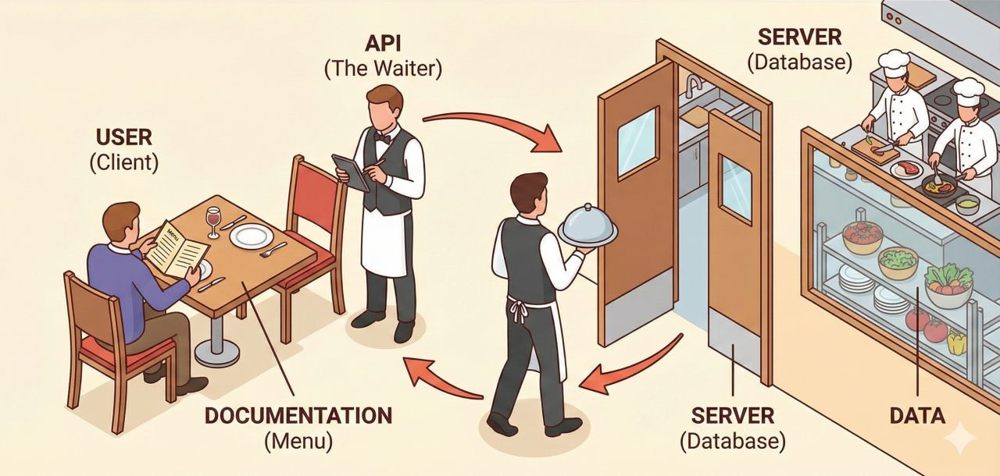

Desarrollo
Software, backend, aplicaciones web y APIs.
Diseño e implementación de una API con FastAPI, procesamiento de imágenes y K-means.
Introducción

Software, backend, aplicaciones web y APIs.
Programación y desarrollo de software con ejercicios prácticos.
Proyectos y material de clase disponibles en GitHub.
Concepto
Define qué puede solicitar un cliente, cómo debe enviar la petición y qué respuesta recibirá.
La API no es la pantalla ni la base de datos: es el punto de acceso al backend.
Separación de responsabilidades
Se ejecuta en el navegador.
Se ejecuta en el servidor.
En este proyecto Vue se ocupa de la interfaz y FastAPI del procesamiento de la imagen.
Analogía

Objetivo
Una imagen JPEG, PNG o WebP y una cantidad entre 3 y 8 colores.
POST /api/v1/palettes procesa la imagen sin guardarla.
Colores dominantes ordenados por frecuencia, con HEX, RGB y porcentaje.
Primero validaremos el contrato y todos los casos con Postman. El frontend se mostrará al final.
00-starter
Antes de comenzar
Funciones, módulos, tipos y manejo básico de excepciones.
Métodos, estados, headers, JSON y formularios.
Peticiones HTTP, headers, body form-data y lectura de respuestas.
Construir imágenes e iniciar servicios con Compose.
Repositorio
| Rama | Resultado disponible |
|---|---|
| 00-starter | FastAPI mínima y Docker Compose |
| 01-api-foundation | FastAPI, ping y Swagger |
| 02-palette-api | Upload, K-means y tests |
| 03-production-hardening | Seguridad y límites |
| 04-frontend | Preview, petición y paleta |
Proceso completo
Postman envía la imagen.
FastAPI comprueba formato y límites.
Pillow normaliza los píxeles.
El modelo identifica clusters.
La API devuelve la paleta en JSON.
01-api-foundation
Responsabilidades
Imagen, tipo de contenido y cantidad de colores mediante multipart/form-data.
Validar el archivo, normalizar sus píxeles y ejecutar K-means.
Devolver JSON tipado con colores, porcentajes, dimensiones y tiempo.
El contrato define qué acepta la API, qué devuelve y qué errores puede producir.
Versionado
Todos los endpoints están bajo /api/v1.
Una versión nueva puede convivir con la anterior.
Swagger muestra los endpoints, campos y estados HTTP.
Endpoints
Confirma que la API está disponible.
Errores HTTP
La petición llega a POST /api/v1/palettes.
El MIME no corresponde a JPEG, PNG o WebP. K-means no se ejecuta.
La API rechaza la petición y explica el motivo.
HTTP 415Indica al cliente qué ocurrió a nivel HTTP.
error.codePermite tomar decisiones sin comparar mensajes.
error.messageExplica el problema a una persona.
error.request_idRelaciona la respuesta con los logs de la API.
Práctica 1
02-palette-api
Pipeline
Machine learning
Agrupamiento de colores
Cada píxel se representa con sus valores rojo, verde y azul.
El algoritmo mide qué píxeles tienen colores parecidos.
Los píxeles similares se reúnen en la cantidad de grupos solicitada.
Cada grupo produce un color representativo y un porcentaje.
Respuesta
Postman
| Caso | Estado | Qué confirma |
|---|---|---|
| Ping | 200 | Disponibilidad y request ID |
| Sin imagen | 422 | Campo obligatorio |
| MIME no permitido | 415 | JPEG, PNG o WebP |
| Archivo mayor a 5 MB | 413 | Límite de lectura |
| Imagen válida | 200 | Paleta, dimensiones y porcentajes |
Práctica 2
03-production-hardening
Configuración
| Variable | Valor | Responsabilidad |
|---|---|---|
| CORS_ORIGINS | Lista | Orígenes permitidos |
| TRUSTED_HOSTS | Lista | Hosts HTTP válidos |
| API_RATE_LIMIT | 10 por segundo | Límite general por IP |
| PALETTE_RATE_LIMIT | 2 por segundo | Límite del procesamiento |
El repositorio incluye un archivo de ejemplo. La configuración local no se versiona.
Seguridad
Orígenes, métodos y encabezados explícitos.
Límite general y límite para K-means.
MIME, tamaño y decodificación real.
Identificador único para respuestas, errores y logs.
04-frontend
Último paso
Vue selecciona la imagen y prepara el formulario.
Envía la petición al endpoint que ya validamos con Postman.
Muestra la paleta devuelta por la API.
Demo final
Seleccionar una imagen válida.
Enviar la imagen a la API.
Comparar la paleta con la respuesta obtenida en Postman.
API terminada
Versión 1
Modelos y errores
Controlar el costo
Casos en Postman
Validación y límites